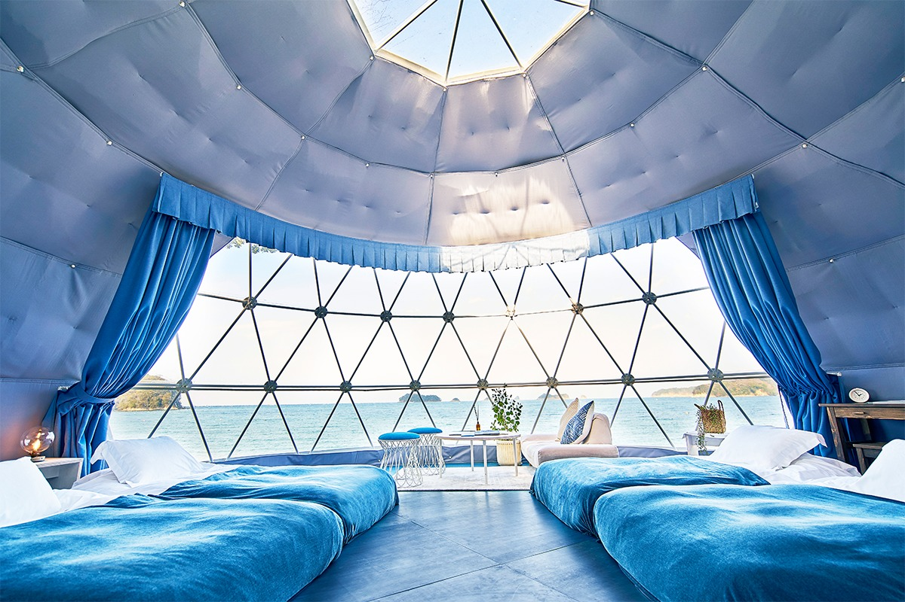
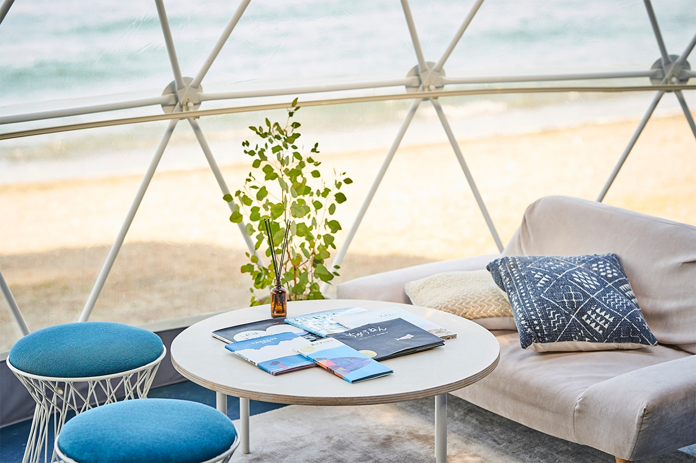
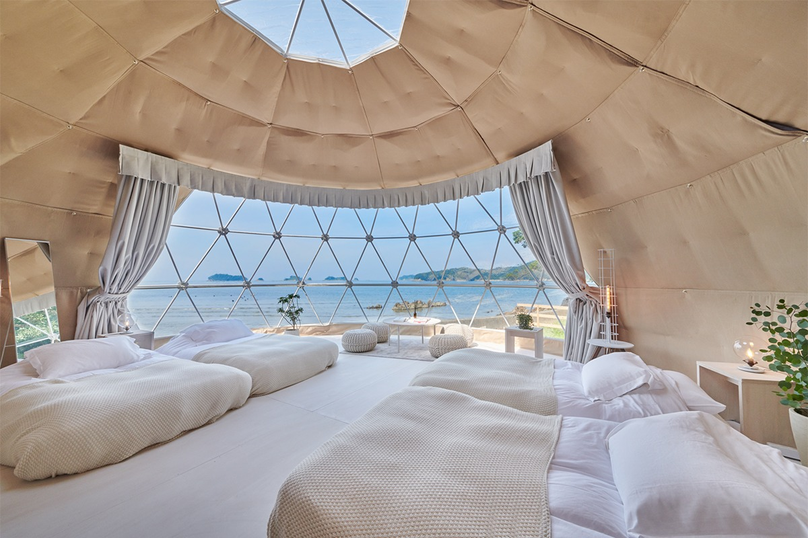
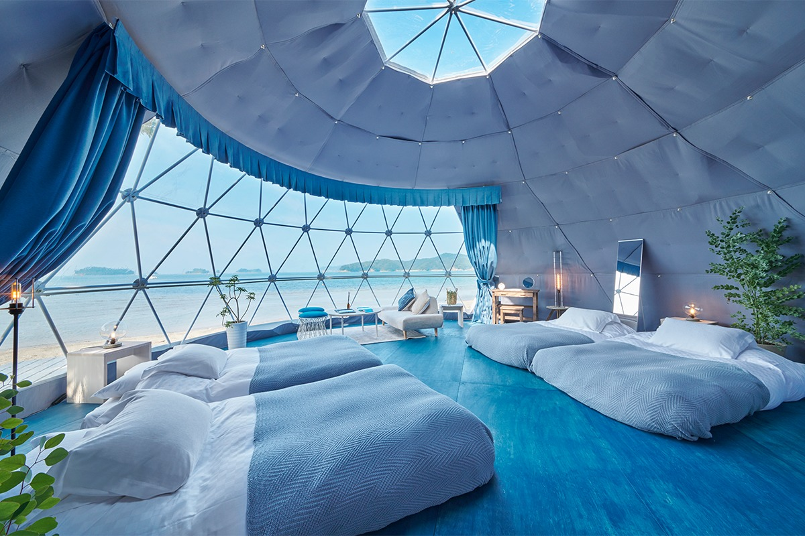
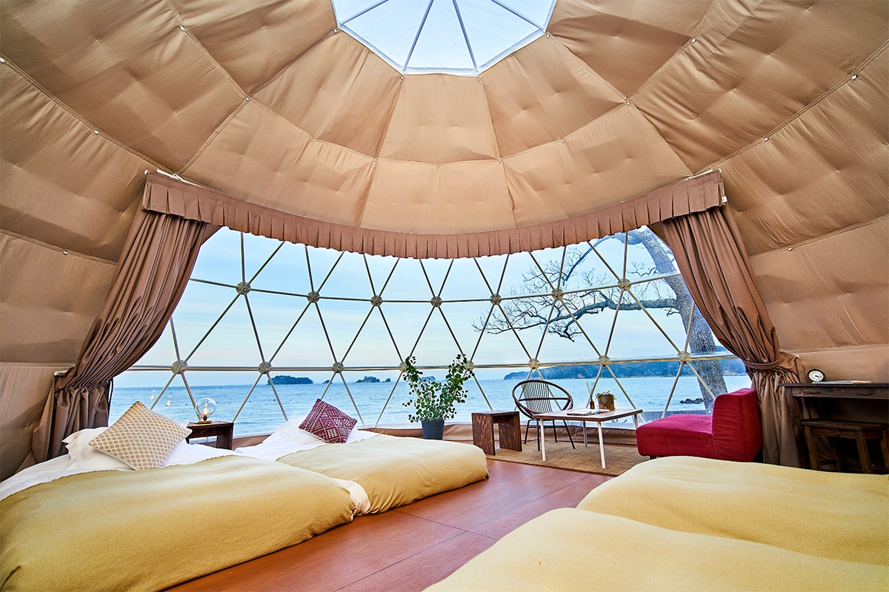
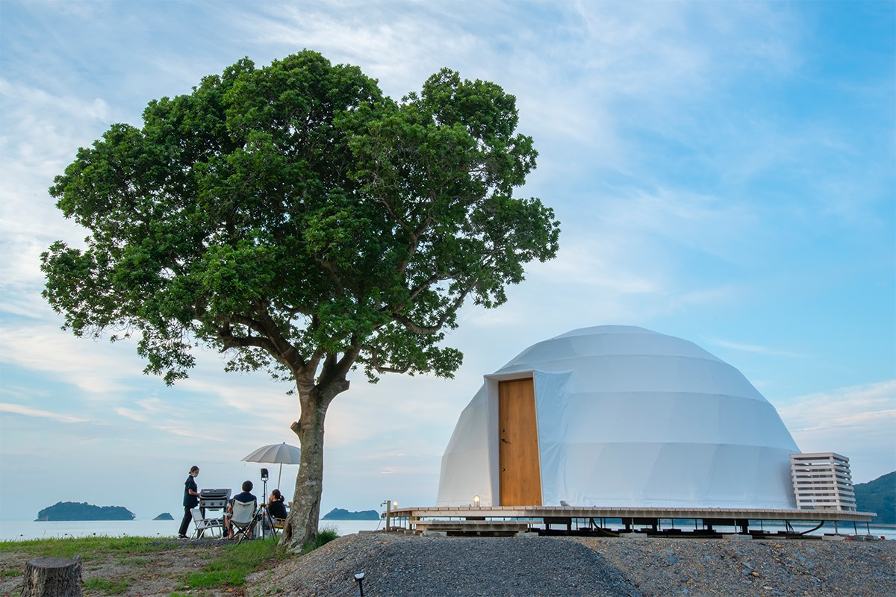
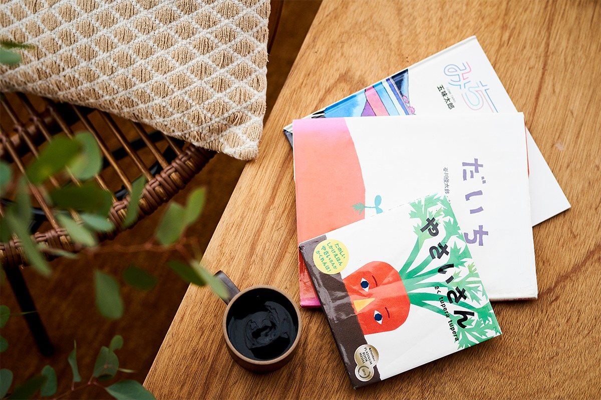
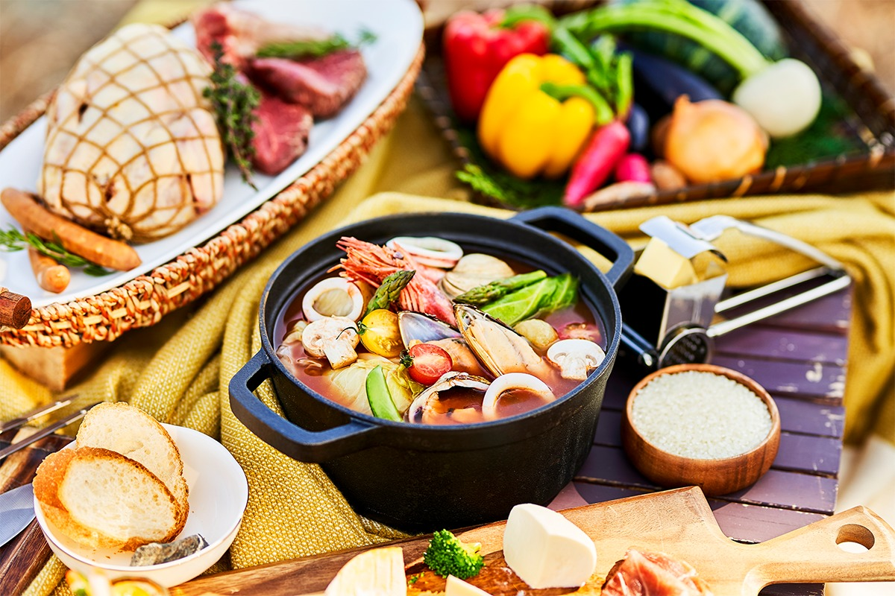
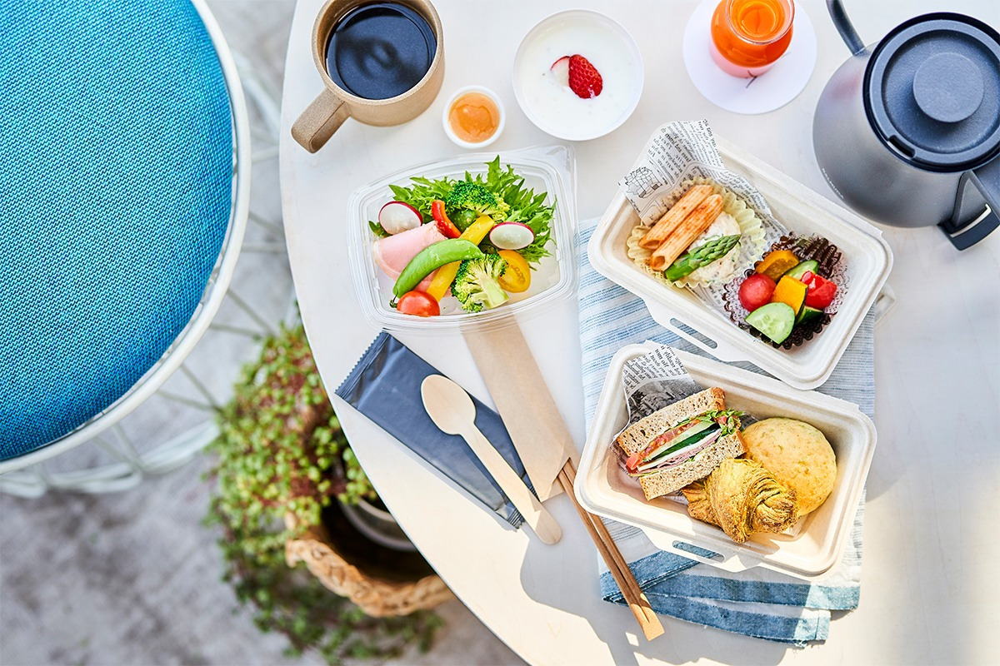
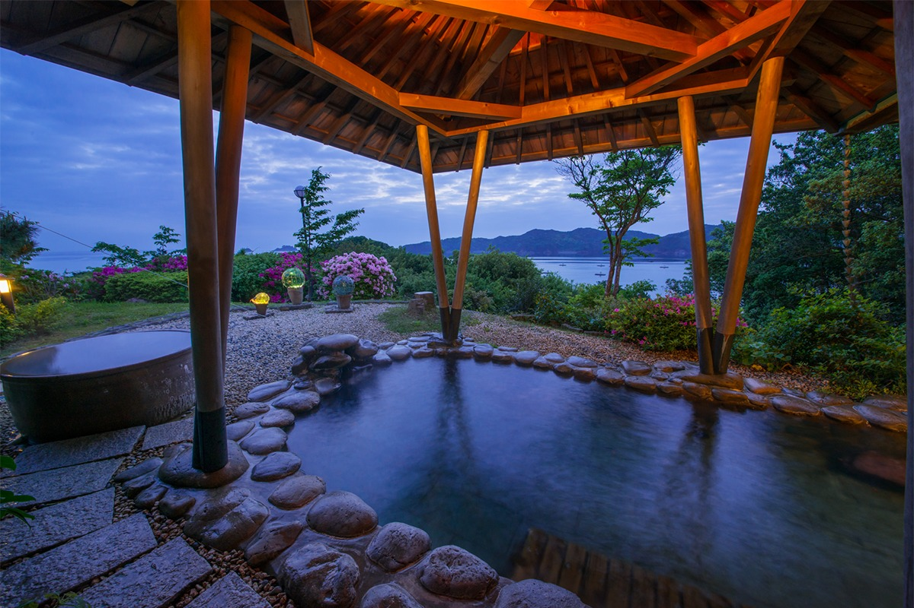

Префектура Миэ · Футами · где остановиться
Glamp Ocean Iseshima: ночь в прозрачном куполе у самой воды залива Исэ

На побережье Исэ-Сима, у частного пляжа глэмпинга Glamp Ocean Iseshima, в 2021 году появились купола, поставленные почти у кромки воды. Засыпать здесь предлагают под шум прибоя.
У воды
Купола на пляже
Глэмпинг Glamp Ocean Iseshima стоит в Футами, приморском районе города Исэ. У него свой пляж длиной 150 метров, а 1 июля 2021 года прямо на нём открылась новая зона Bay Terrace: девять куполов, повёрнутых к заливу Исэ. В 2026 году на сайте отеля эта часть называется Bay Area.

Купола поставлены у самой линии прибоя, и в тихую погоду мягкий шум волн убаюкивает лучше любой музыки. Окно во всю стену прозрачное, поэтому море меняется на глазах: утром одно, к вечеру совсем другое. Внутри есть кондиционер и отопление, так что жить здесь удобно в любое время года.
Самый большой купол имеет диаметр 7 метров и площадь 38 квадратных метров. В нём четыре полуторные кровати, диван и вся мебель, нужная для отдыха, а принять он может от двух до четырёх гостей. Есть и купола поменьше, около 28 квадратных метров. В 2021 году ночь с ужином и завтраком стоила от 27 500 иен с налогом на одного взрослого.
Три цвета
Белый, морской и земляной
Купола оформлены по темам, и у каждого свой цвет.
В белом куполе белое всё, от входа до обивки. Белый здесь означает не только чистоту и надёжность, но и начало чего-то нового. На этом фоне синева залива за окном кажется ещё ярче.

Морской купол посвящён морю. Интерьер выдержан в свежих голубых тонах и спокойно перекликается с видом на залив. Если лечь на кровать и смотреть на воду, кажется, что тихо покачиваешься на волнах. Для настроения тут лежат вещи на морскую тему и книжки с картинками.

Земляной купол посвящён земле. Мягкие коричневые и тёплые тона делают его самым уютным из трёх.

Есть и вариант для тех, кто любит смотреть на море сверху. «Гранд-дек» это купол высшей категории на деревянном настиле на возвышенности, и принимают в нём не больше двух компаний в день. Снаружи стоят горка и качели, так что с детьми здесь особенно удобно.

Мелочь
Книжка в каждом куполе
В каждом куполе лежат книжки с картинками, и какие именно, узнаешь, только войдя внутрь. Можно перечитать то, что любил в детстве, почитать любимую книжку вместе с ребёнком или наткнуться на совсем новую.

Ужин
Барбекю у моря
Ужин здесь это барбекю, его подают с 17:30 до 21:00, начать можно не позже 19:00. В 2021 году в меню были три вида сыра, баньякауда и хамон на закуску, ахильо с устрицами и буйабес. Потом шло ассорти из пяти видов мяса: курица тандури, курица джерк, свиные рёбрышки, говядина ангус и сосиски на кости. К мясу подавали овощи и сырное ризотто, а на десерт смор, то есть маршмеллоу с крекером и шоколадным соусом, и ананас. Меню меняется в зависимости от того, что удалось закупить.

За доплату можно добавить морское ушко или лангуст исэ-эби, в 2021 году каждое стоило 3300 иен с налогом.
На завтрак два варианта. Первый: коробка с лёгким завтраком, которую приносят прямо в купол с 7:30 до 10:00. Второй: японский завтрак в зале рёкана Umi no Cho по соседству, с 7:15 до 8:45. Есть также напитки и детское меню.

На территории
Онсэн, бассейн и каяки
Гости Bay Terrace пользуются всем, что есть у основного комплекса Glamp Ocean Iseshima. В главном корпусе работает Beach Club Tropicana с напитками, едой и десертами, есть домики у моря, частный пляж, бассейн и онсэн с природным источником, в том числе под открытым небом.

Рядом стоит святилище Авамико, куда приходят молиться об удаче в любви. Можно взять морской каяк: на нём справятся и новички, и дети.
Glamp Ocean Iseshima, зона Bay Terrace
- Адрес
- префектура Миэ, Исэ, Футами-тё, Мацусита, 1693-1
- Телефон
- +81 596-44-1060
- Номера
- 9 куполов, около 28 и около 38 м², на 2–4 гостей; полуторные кровати, диван, кондиционер, бесплатный Wi-Fi, фен
- Цены / Вход
- от 27 500 иен с налогом с человека, ужин и завтрак включены (2021)
- Сайт
- glampocean.jp